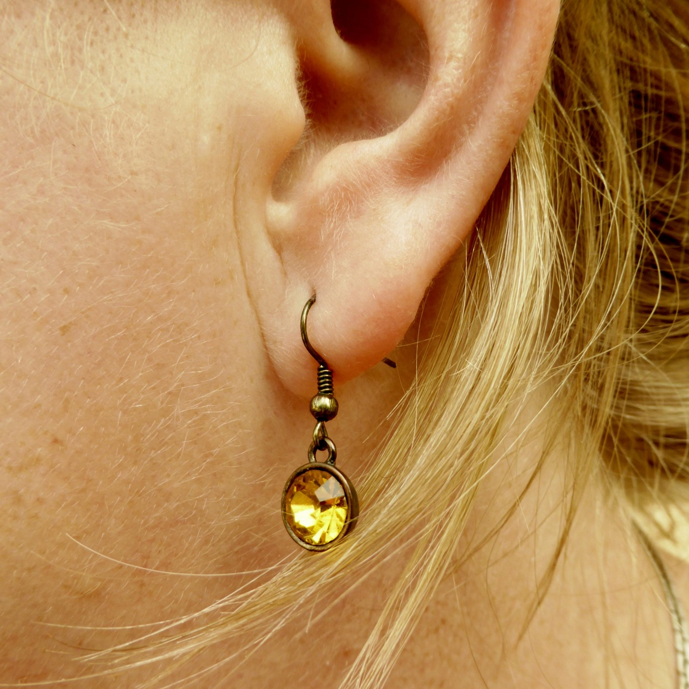

Pain
Do Ear Piercings Hurt?
Honest answer for first-timers: what it feels like, how long it lasts, and expert tips to make it easier.
Continue Reading
Free Guide • Types, Pain & Healing
Express your soul through curated placements and artistic jewelry. We compose living art tailored to your unique anatomy.
From The Journal
Pain
Honest answer for first-timers: what it feels like, how long it lasts, and expert tips to make it easier.
Continue Reading
Pain
The complete pain scale from lobe (2/10) to snug (7/10), plus expert tips to minimize discomfort.
Continue Reading
Pricing
A complete price guide covering lobe, cartilage, daith, conch, and what affects the cost.
Continue Reading
Guide
Helix, tragus, conch, daith, rook and more — pain levels, healing times, and aftercare tips.
Continue Reading
Style
How to plan a curated ear: the best combinations and whether you can get several at once.
Continue Reading
Inspo
Creative inspiration for your next combination: minimalist, curated, cute, and bold looks.
Continue ReadingGetting a piercing is a permanent decision — but most people go in with almost no information. We built this guide to change that.
Why This Guide Exists
Ready To Start Your Project?